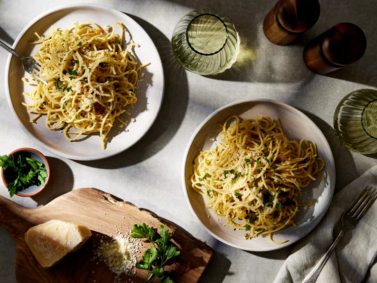
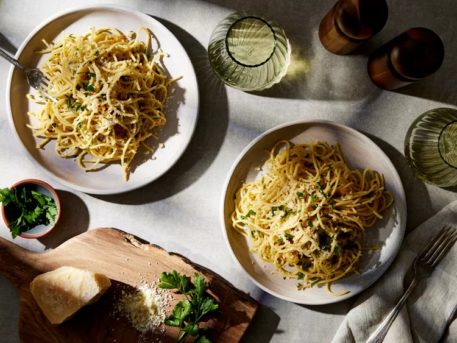

Equipments
- 1 Large Pot
- 1 Pan
- 1 Spatula
- 1 Large Bowl
- 1 Cutting Board
- 1 Chef's Knife
Ingredients
- 1 pound uncooked spaghetti
- ½ cup olive oil
- 6 cloves garlic, thinly sliced
- ¼ teaspoon red pepper flakes, or to taste
- salt and freshly ground black pepper to taste
- ¼ cup chopped fresh Italian parsley
- 1 cup finely grated Parmigiano-Reggiano cheese
Instructions
- Gather all ingredients.
- Bring a large pot of lightly salted water to a boil. Cook spaghetti in the boiling water, stirring occasionally until cooked through but firm to the bite, about 10 to 12 minutes. Drain and transfer to a pasta bowl.
- While the pasta is cooking, combine olive oil and garlic in a cold skillet.
- Cook over medium heat to slowly toast garlic, about 10 minutes. Reduce heat to medium-low when olive oil begins to bubble. Cook and stir until garlic is golden brown, about another 5 minutes. Remove from heat.
- Stir red pepper flakes, salt, and black pepper into pasta.
- Pour in hot olive oil and garlic, and sprinkle on Italian parsley and half of the Parmigiano-Reggiano cheese; toss until combined.
- Serve pasta topped with the remaining Parmigiano-Reggiano cheese.
From allrecipes
Images

 

Recipe Websites
- allrecipes: This recipe website shows an image for each step, so it is easy to follow through the steps.
- foodnetwork: This website has ingredients and directions next to each other, so it is easy to check items needed as going through the steps.
- simplyrecipes: This webiste is interesting because it tells about personal stories such as their personal motivation before showing ingredients and instructions.
Non-recipe Websites
- httpster: I like how they organize the scrolling bar with a ruler design ordered by months. I might use this technique by labeling each step on the scrolling bar.
- hoverstat.es: I like the animation they put on the main screen when I first get into the website. This technique could be applied to my recipe website by showing the animation of making my chosen dish on the main screen.
- goodui: Each step is indicated clearly with a black circle and a large font size, which is slightly outdented. This clearly highlights each section and emphasizes the user's progression through the steps, making the interface more intuitive and easy to follow.